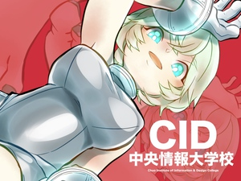

Copyright © CHUO Institute of Information and Design College.
ゲームスクールコーナー http://www.chuo.ac.jp/cid
群馬県高崎市にある情報×デザインの分野に強い専門学校です！ ゲームづくりを通じて情報×デザインの知識・技術を学習する「実践型学習」の成果として、今年も出展しています！ ゲームプログラマやゲームクリエイター、ＣＧやプロダクトデザイナーを目指す学科に、モノづくりや新しいモノが好きな人たちが集まって、とにかく楽しみながら実践力を身につけている私たちのカリキュラム！ ぜひ、みなさんも一緒に加わってみませんか？